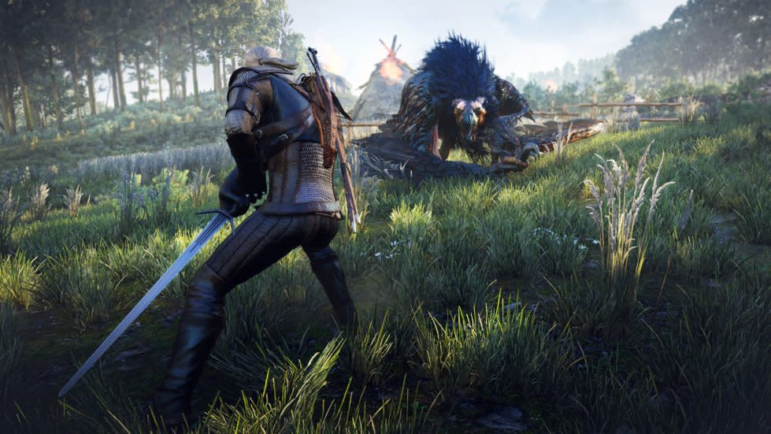
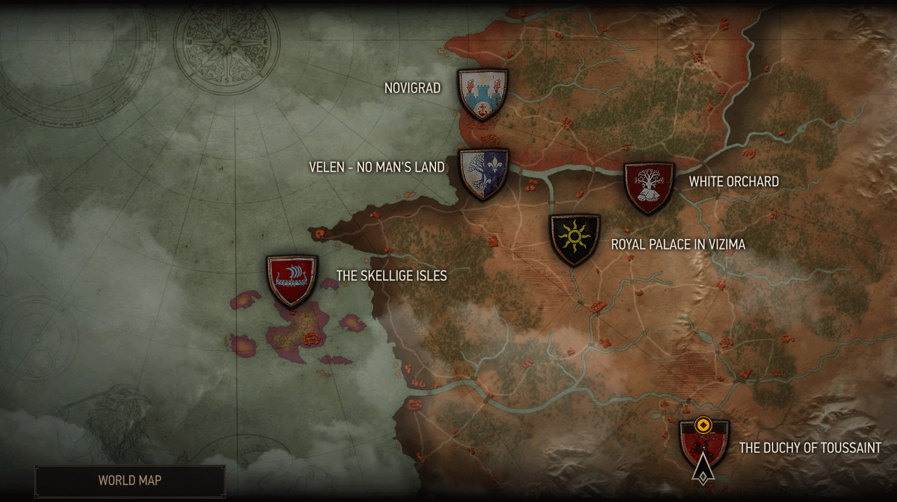
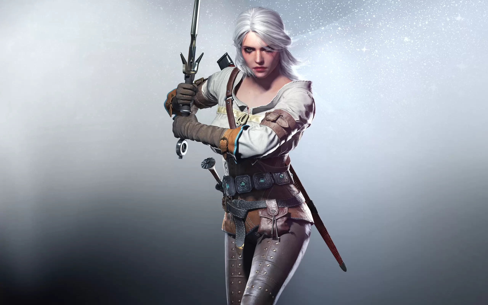
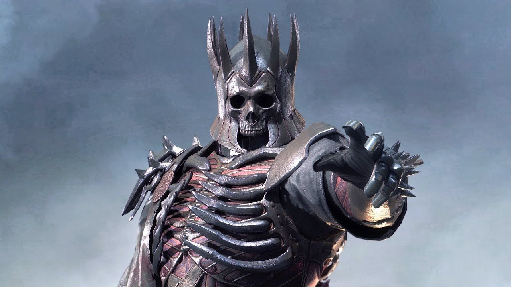
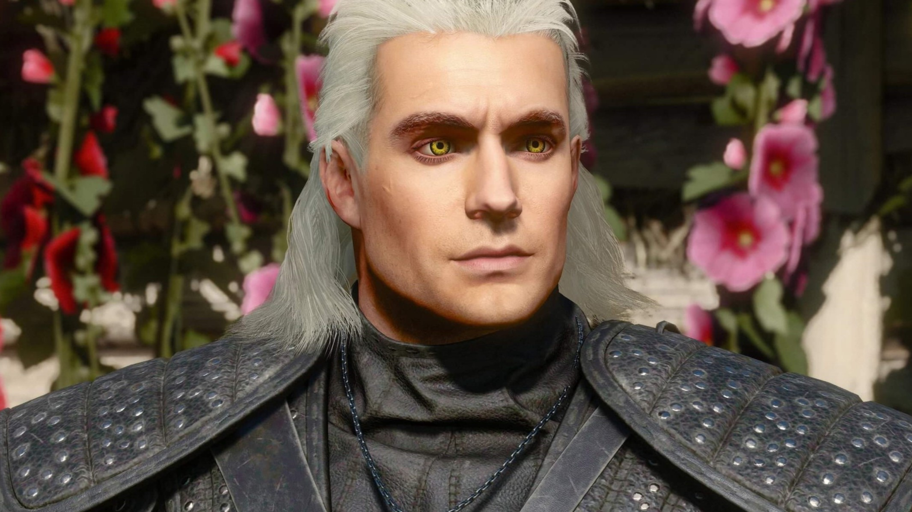

Cerita

The Witcher 3: Wild Hunt mengikuti perjalanan Geralt of Rivia, seorang pemburu monster profesional (witcher) yang sedang mencari putri angkatnya, Ciri. Ciri sedang diburu oleh The Wild Hunt, sekelompok hantu penunggang kuda dari dimensi lain yang ingin memanfaatkan kekuatan darah kuno yang dimilikinya.
Cerita berlatar di Continent, dunia yang dilanda perang antara Kekaisaran Nilfgaard dan Kerajaan Utara. Di tengah kekacauan politik ini, Geralt harus menelusuri jejak Ciri sambil menghadapi berbagai pilihan moral yang sulit, yang akan mempengaruhi nasib berbagai karakter dan seluruh kerajaan.
Dunia

Dunia dalam The Witcher 3 terbagi menjadi beberapa wilayah utama: White Orchard, Velen, Novigrad, Skellige, dan Toussaint.
Dunia ini dihuni oleh beberapa ras termasuk manusia, elf, dwarf, dan makhluk lainnya. Mereka hidup dalam ketegangan yang konstan, dengan ras non-manusia yang sering mengalami diskriminasi dan penganiayaan. Berbagai monster berkeliaran di luar kota, membuat perjalanan menjadi berbahaya dan menciptakan kebutuhan akan jasa witcher seperti Geralt.
Karakter
The Witcher 3 menampilkan beragam karakter yang kompleks dan menarik. Dari sekutu Geralt hinga musuh-musuhnya, setiap karakter memiliki motivasi dan latar belakang yang mendalam.
Geralt of Rivia

Protagonis utama, seorang witcher yang bermutasi, terlatih dalam seni pedang dan sihir dasar. Meskipun dipandang dengan ketakutan dan kecurigaan oleh masyarakat, Geralt mempertahankan kode etis yang kuat dan kesetiaan kepada orang-orang terdekatnya.
Ciri

Putri angkat Geralt, yang memiliki darah kuno dengan kekuatan luar biasa. Kemampuannya untuk melakukan teleportasi dan perjalanan antar dunia membuatnya menjadi target The Wild Hunt. Dia adalah seorang pejuang yang tangguh yang dilatih sebagai witcher meskipun tidak pernah menjalani mutasi.
Eredin

Pemimpin kelompok elf dari dimensi lain yang dikenal sebagai Aen Elle, Raja Eredin Bréacc Glas. Mereka menunggang kuda-kuda gaib dan tampak sebagai hantu berarmor yang menakutkan. Wild Hunt berburu Ciri karena kekuatan Darah Kuno yang dia miliki, yang dapat membantu mereka melakukan invasi antar dunia. Mereka dikenal sebagai pembawa bencana dan kematian, menciptakan ketakutan di hati penduduk Continent.
Komunitas

Komunitas modding The Witcher 3 telah menciptakan ribuan modifikasi yang meningkatkan berbagai aspek game, dari perbaikan visual dan gameplay, hingga konten dan quest baru.
CD Projekt Red mendukung komunitas modding dengan menyediakan tools dan dokumentasi, hal ini memungkinkan pemain untuk mempersonalisasi pengalaman mereka dan memperpanjang umur game.
Mod Populer
Mod seperti HD Reworked Project yang meningkatkan tekstur, Ghost Mode yang menyeimbangkan gameplay, dan berbagai mod yang menambahkan armor, senjata, dan fitur baru telah didownload jutaan kali.
Fan Content
Selain mod, komunitas juga menciptakan fan art, cosplay, musik, dan video yang menunjukkan dedikasi dan kreativitas penggemar The Witcher di seluruh dunia.